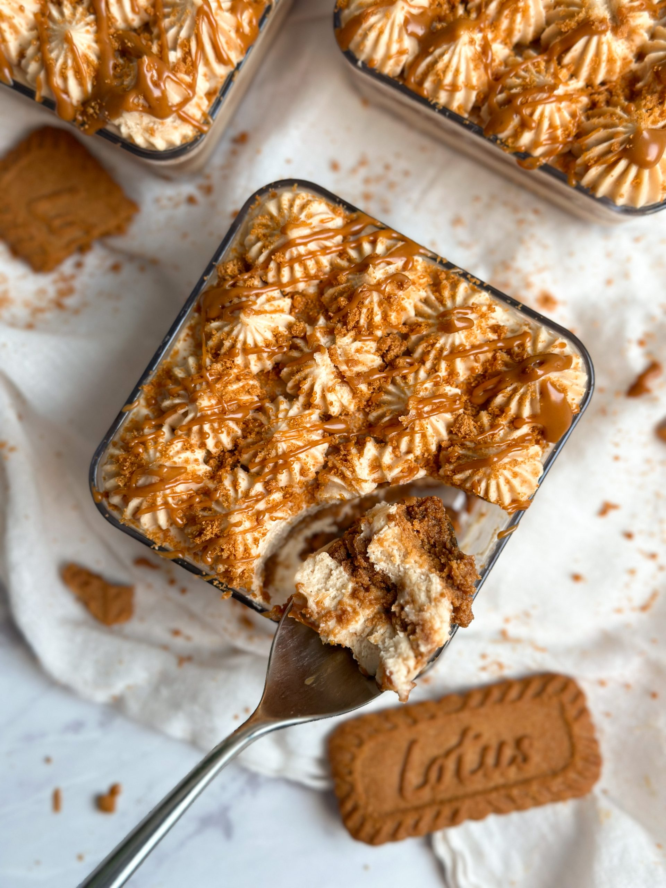

Biscoff Cake

Description
This Biscoff Lazy Cake is made with just four ingredients, and no cooking required! Simply refrigerate until set, and
relish the sweet, luscious lotus cookie flavor; a delightful dessert.
Ingredients
- Lotus Biscoff cookies
- Biscoff cookie butter
- Heavy whipping cream
- Powdered sugar
Steps
- In your stand or hand mixer, start with 2 cups of heavy whipping cream and whip at medium-low speed. When soft
peaks begin to form, add the powdered sugar and increase to medium-high speed. After a minute or so, as stiff
peaks take shape, add ¾ cup of Biscoff cookie butter. Whisk for another minute until fully incorporated.
- Line an 8×4 baking pan with enough plastic wrap to be able to fully cover the cake once done.
- Line the baking pan with enough lotus cooking (word side down) to cover the bottom of the pan.
- Gently break the remaining lotus cookies with your hands, about 3 pieces per cookie and add to the whipped cream
mixture. Mix to combine.
- Pour the whipped cream mixture into the baking pan, ensuring a smooth top. Line the pan with the remaining Lotus
cookies (word side up).
- Retrieve the Biscoff Lazy Cake from the fridge and carefully unwrap it. Flip the cake onto a serving platter.
- Warm up ¼ cup of lotus cookie butter in the microwave and drizzle over the top of the cake. Serve chilled.